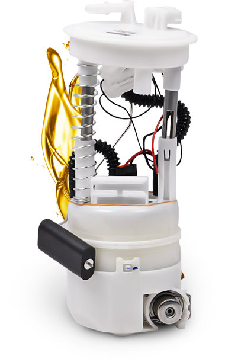
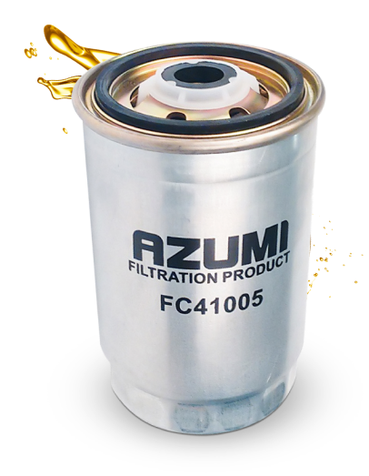
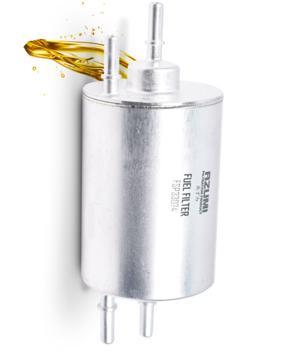
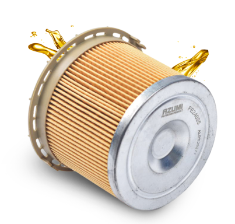

FUEL FILTERS
Protect your car engine from dirt, rust and other particles that get into it along with fuel by choosing AZUMI filters.
MAIN FUNCTION OF THE FUEL FILTER -
Prevent contamination, water and premature failure of the injection system or engine carburetor from entering the fuel system.
ADVANTAGES OF AZUMI FUEL FILTERS
- Porousness
- FC-158, 321 paper roll
- Micro pleating allows to increase filtration area
In-Tank Fuel Filters (FST)

Spin-On Diesel Fuel Filters (FC)

Fuel-Injector Filters (FSP)

Environmental Fuel Filters (FE)

- Reducing the cost of maintenance
- Environmental protection through long-term use of the main filter elements
- Reducing the risk of installing the wrong filter design
- Convenient filter replacement